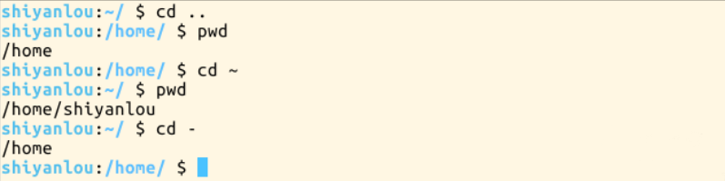
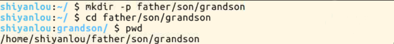
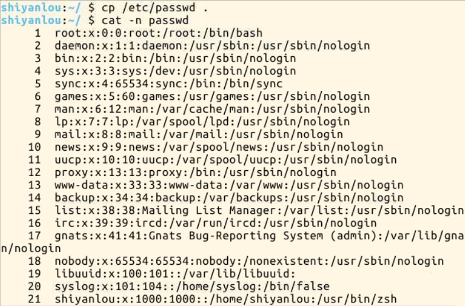
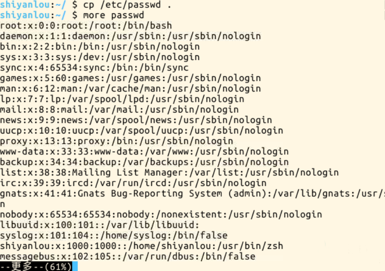
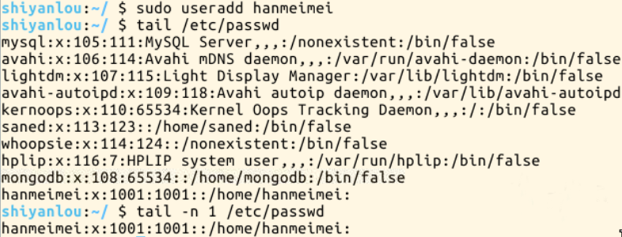

在讲linux目录结构之前，你首先要清楚一点东西，那就是linux的目录与windows的目录的区别，或许对于一般操作上的感受来说没有多大不同，但从它们的实现机制来说是完全不同的。
一种不同是体现在目录与存储介质（磁盘，内存，DVD等）的关系上，以往的windows一直是以存储介质为主的，主要以盘符（C盘，D盘...）及分区的来实现文件管理，然后之下才是目录，目录就显得不是那么重要，除系统文件之外的用户文件放在任何地方任何目录也是没有多大关系。所以通常windows在使用一段时间后，磁盘上面的文件目录会显得杂乱无章（少数善于整理的用户除外吧）。然而UNIX/Linux恰好相反，UNIX是以目录为主的，linux也继承了这一优良特性。linux是以树形目录结构的形式来构建整个系统的，可以理解为一个用户可操作系统的骨架。虽然本质上无论是目录结构还是操作系统内核都是存储在磁盘上的，但从逻辑上来说linux的磁盘是“挂在”（挂载在）目录上的，每一个目录不仅能使用本地磁盘分区的文件系统，也可以使用网络上的文件系统。举例来说，可以利用网络文件系统(Network File System，NFS)服务器载入某特定目录等。这里不能理解的话你可以脑补一下，“一颗挂满各种程序猿的树”的画面，呵呵，我只能说，那画面太美...的。
linux的目录结构说复杂很复杂，说简单也很简单。复杂在于，因为系统的正常运行是以目录结构为基础的，对于初学者来说里面大部分目录都不知道其作用，重要与否，特别对于哪些曾近的重度windows用户，他们会纠结很长时间，关于我安装的软件在哪里这类问题。说它简单是因为，它其中大部分目录结构是规定好了（FHS标准），是死的，当你掌握后，你在里面的一切操作都会变得井然有序。不多说了，对linux的目录结构暂时不能食其肉，那就摸其骨吧
FHS(英文：Filesystem Hierarchy Standard 中文:文件系统层次结构标准)，多数Linux版本采用这种文件组织形式，FHS定义了系统中每个区域的用途、所需要的最小构成的文件和目录同时还给出了例外处理与矛盾处理。 FHS定义了两层规范，第一层是， / 下面的各个目录应该要放什么文件数据，例如/etc应该要放置设置文件，/bin与/sbin则应该要放置可执行文件等等。 第二层则是针对/usr及/var这两个目录的子目录来定义。例如/var/log放置系统登录文件、/usr/share放置共享数据等等。 FHS_2.3标准文档
如果你觉得看这个不爽，那么你可以试试最真实最直观的方式，执行如下命令
$ tree /
如果提示"command not found",就先安装
#因为我们的环境的原因，每次新启动实验会清除系统恢复初始状态，所以需要手动更新软件包索引，以便我们安装时能找到相应软件包的源 $ sudo apt-get update;sudo apt-get install tree
关于上面提到的FHS，这里还有个很重要的内容你一定要明白，FHS是根据以往无数linux用户和开发者的经验总结出来的，并且会维持更新，FHS依据文件系统使用的频繁与否以及是否允许用户随意改动（注意，不是不能，学习过程中，不要怕这些），将目录定义为四种交互作用的形态，如下表所示：
关于FHS说了这么多，我也累了，相信我，讲更多你一次也记不住，反正这FHS也是从实际经验中总结出来的，就让我们在实践中学习吧
路径
有人可能不明白这路径是指什么，有什么用。顾名思义，路径就是你要去哪儿的路线嘛。如果你想进入某个具体的目录或者想获得某个目录的文件（目录本身也是文件）那就得用路径来找到了。
使用cd命令可以切换目录，在linux里面使用.表示当前目录,..表示上一级目录（**注意，还记得我们上一节介绍过的，以.开头的文件都是隐藏文件，所以这两个目录必然也是隐藏的，你可以使用ls -a命令查看隐藏文件）,-表示上一次所在目录，～通常表示当前用户的"home"目录。使用pwd命令可以获取当前所在路径（绝对路径）
进入上一级目录
$ cd ..
进入你的“home”目录
$ cd ~ (#或者cd /home/<你的用户名>)
使用pwd获取当前路径
$ pwd

绝对路径
关于绝对路径，简单地说就是以根"/"目录为起点的完整路径，以你所要到的目录为终点，表现形式如: /usr/local/bin,表示根目录下的usr目录中的local目录中的bin目录（ps:很绕啊）。
相对路径
相对路径，也就是相对于你当前的目录的路径，相对路径是以当前目录.为起点，以你所要到的目录为终点，表现形式如： usr/local/bin(这里假设你当前目录为根目录)。你可能注意到，我们表示相对路径实际并没有加上表示当前目录的那个.，而是直接以目录名开头，因为这个usr目录为/目录下的子目录，是可以省略这个.的（以后会讲到一个类似不能省略的情况）；如果是当前目录的上一级目录，则需要使用..，比如你当前目录为“home”目录，根目录就应该表示为../../,表示上一级目录("home"目录)的上一级目录("/"目录)。
下面我们以你的"home"目录为起点，分别以绝对路径和相对路径的方式进入/usr/local/bin目录：
#绝对路径 cd /usr/local/bin #相对路径 cd ../../usr/local/bin
进入一个目录，可以使用绝对路径也可以使用相对路径，那我们应该在什么时候选择正确的方式进入某个目录呢。就是凭直觉嘛，你觉得怎样方便就使用哪一个，而不用特意只使用某一种。比如假设我当前在/usr/local/bin目录，我想进入上一级的local目录你说是使用cd ..方便还是cd /usr/local方便。而如果要进入的是usr目录，那么cd /usr，就比cd ../..方便一点了。
提示：在进行目录切换的过程中请多使用Tab键自动补全，可避免输入错误，连续按两次Tab可以显示全部候选结果
新建空白文件
使用touch命令创建空白文件，关于touch命令，其主要是来更改已有文件的时间戳的（比如，最近访问时间，最近修改时间），但其在不加任何参数的情况下，只指定一个文件名，则可以创建一个为指定文件名的空白文件(不会覆盖已有同名文件)，当然你也可以同时指定该文件的时间戳，更多关于touch命令的用法，会在下一讲文件搜索中涉及。
创建名为test的空白文件，因为在其他目录没有权限，所以需要先cd ~切换回用户的/home/shiyanlou目录
$ cd ~ $ touch test
新建目录
使用mkdir (make directories)命令可以创建一个空目录,也可同时指定创建目录的权限属性
创建名为"mydir"的空目录
$ mkdir mydir
使用-p参数，同时创建父目录（如果不存在该父目录），如下我们同时创建一个多级目录(这在有时候安装软件，配置安装路径时非常有用)
$ mkdir -p father/son/grandson

后面的目录路径，以绝对路径的方式表示也是可以的
复制文件
使用cp(copy)命令复制一个文件或目录到指定目录
将之前创建的"test"文件复制到"/home/shiyanlou/father/son/grandson"目录中
$ cp test father/son/grandson
是不是很方便啊，如果在图形界面则需要先在源目录复制文件，再进到目的目录粘贴文件，命令行操作步骤就一步到位了嘛
复制目录
如果直接使用cp命令，复制一个目录的话，会出现如下错误
要成功复制目录需要加上-r或者-R参数，表示递归复制，就是说有点“株连九族”的意思，连它的子子孙孙都不放过
$ cp -r father family
删除文件
使用rm（remove files or directories）命令，删除一个文件或目录
$ rm test
有时候你会遇到想要删除一些为只读权限的文件，直接使用rm删除会显示一个提示，如下：
你如果想忽略这提示，直接删除文件，可以使用-f参数强制删除
$ rm -f test
删除目录
跟复制目录一样，要删除一个目录，也需要加上-r或-R参数
$ rm -r family
移动文件
使用mv(move or rename files)命令，移动文件（剪切）
将文件"file1"移动到"Documents"目录mv 源目录文件 目的目录
$ mv file1 Documents
重命名文件
将文件"file1"重命名为"myfile" mv 旧的文件名 新的文件名
$ mv file1 myfile
批量重命名
要实现批量重命名，mv命令就有点力不从心了，我们可以使用一个看起来更专业的命令rename来实现。不过它是要用perl正则表达式来作为参数，关于正则表达式我们要在后面才会介绍到，这里只做演示，你只要记得这个rename命令可以批量重命名就好了，以后再重新学习也不会有任何问题，毕竟你已经掌握了一个更常用的mv命令
# 现实用通配符批量创建5个文件 $ touch file{1..5}.txt # 批量将这5个后缀为.txt的文本文件重命名为以.c为后缀的文件 $ rename 's/\.txt/\.c/' *.txt # 批量将这5个文件，文件名改为大写 $ rename 'y/a-z/A-Z/' *.c
简单解释下上面的命令，rename是先使用第二个参数的通配符匹配所有后缀为.txt的文件，然后使用第一个参数提供的正则表达式将匹配的这些文件的.txt后缀替换为.c，这一点在我们后面学习了sed命令后,相信你会更好的理解。
使用cat,tac和nl命令查看文件
这两个命令都是用来打印文件内容到标准输出（终端）,其中cat(注意不是猫哈)为正序显示，tac倒序显示，这里只介绍cat，另一个你就自己去体会吧
标准输入输出：当我们执行一个shell命令行时通常会自动打开三个标准文件，即标准输入文件（stdin），默认对应终端的键盘；标准输出文件（stdout）和标准错误输出文件（stderr），这两个文件都对应被重定向到终端的屏幕，以便我们能直接看到输出内容。进程将从标准输入文件中得到输入数据，将正常输出数据输出到标准输出文件，而将错误信息送到标准错误文件中。
比如我们要查看之前从"/etc"目录下拷贝来的passwd文件
$ cat passwd
可以加上-n参数显示行号
$ cat -n passwd

nl命令，添加行号并打印，这是个比cat -n更专业的行号打印砖家（这年代都比较迷信砖家嘛）
这里简单列举它的常用的几个参数
-b : 指定添加行号的方式，主要有两种：
-b a:表示无论是否为空行，同样列出行号("cat -n"就是这种方式)
-b t:只列出非空行的编号并列出（默认为这种方式）
-n : 设置行号的样式，主要有三种：
-n ln:在行号字段最左端显示
-n rn:在行号字段最右边显示，且不加0
-n rz:在行号字段最右边显示，且加0
-w : 行号字段占用的位数(默认为6位)
你会发现使用这几个命令，默认的终端窗口大小，一屏显示不完文本的内容，得用鼠标拖动滚动条或者滑动滚轮才能继续往下翻页，要是可以直接使用键盘操作翻页就好了，那么你就可以使用下面要介绍的命令
使用more和less命令分页查看文件
如果说上面的cat是用来快速查看一个文件内容的，那么这个more和less就是天生用来"阅读"一个文件的内容的，比如说"man"手册内部就是使用的less来显示内容。其中more命令比较简单，只能向一个方向滚动，而"less"为基于"more"和"vi"(一个强大的编辑器，我们有单独的课程来让你学习)开发，功能更强大。less的使用基本和more一致，具体使用请查看man手册，这里只介绍more命令的使用
使用more工具打开passwd文件
$ more passwd

打开后默认只显示一屏内容，终端底部显示当前阅读的进度(百分比)。可以使用Enter键向下滚动一行，使用Space键向下滚动一屏，按下h显示帮助，q退出
使用head和tail命令查看文件
这两个命令那些性子比较急的人应该会比较喜欢，因为它们一个是只查看的头几行（默认为10行，不足10行则显示全部）和尾几行。还是拿passwd文件举例，比如当我们想要查看最近新增加的用户，那么我们可以查看这个/etc/passwd文件，不过我们前面也看到了，这个文件里面一大堆乱糟糟的东西，看起来实在费神啊。这里想到系统新增加一个用户，应该会将用户的信息添加到passwd文件的最后，那么这时候我们就可以使用tail命令了
$ tail /etc/passwd
甚至更直接的只看一行， 加上-n参数，后面紧跟行数
$ tail -n 1 /etc/passwd

关于tail命令，不得不提的还有它一个很牛的参数-f，这个参数可以实现不停地读取某个文件的内容并显示。这可让我们动态查看日志起到实时监视的作用，不过我不会在这门基础课程中介绍它的更多细节，感兴趣的用户可以自己去了解。
前面我提到过，在linux下面文件的类型不是根据文件后缀来判断的，我们通常使用file命令可以查看文件的类型
$ file /bin/ls
这表示这是一个可执行文件，运行在64位平台，并使用了动态链接文件（共享库）
在linux下面编辑文件通常我们会直接使用专门的命令行编辑器比如（emacs,vim,nano）,由于涉及linux上的编辑器的内容比较多，且非常重要，故我们有一门单独的基础课专门介绍这其中一个编辑器(vim)。在这里强烈希望正在学习这门linux基础课的你先在这里暂停一下，先去学习vim编辑器的使用（至少掌握基本的操作）然后再继续本课程后面的内容，因为后面的内容会假设你已经学会了vim编辑器的使用。如果你想更加快速的入门，你可以直接使用linux内部的vim学习教程，输入如下命令即可开始
$ vimtutor